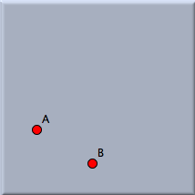
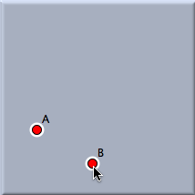
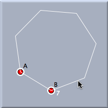
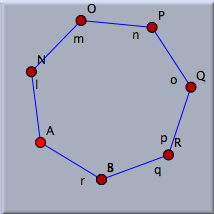

多角形
シンデレラ２ には、正多角形をつくるためのいろいろな方法が。「モード」メニューの「多角形」サブメニューに用意されています。これらは２つのグループに分けられます。「正多角形」モードとそれ以外のものです。
正多角形
描きたい正多角形の一辺(２つの端点)がすでにある場合はこのモードが使えます。まず、その２つの点を順にクリックします。つぎに、そのままマウスを動かすと、画面に正多角形がヒントとして表示されます。マウスの位置を調節して、三角形や正方形、正五角形など、望む形になったらマウスボタンをクリックすれば、正多角形とともに、各頂点が作られます。できあがった点などは、普通の幾何学的要素として扱えます。
 | |
 | |
 | |
 | |
| ２つの点がある | |
順に選ぶ | |
マウスを動かす | |
クリックすればできあがり | |
このモードは双曲幾何学でも利用できます、その場合には、正
双曲多角形がつくられます。これは、辺の長さとなす角がすべて等しい多角形です。
注意
このモードは、球面幾何学では現在サポートされていません。双曲幾何学においては、ユークリッド幾何学と異なり、n角形の角度は、数nでは決まりません。
中心と頂点で決まる正多角形
正多角形のもうひとつのモードは、「円を加える」モードとよく似ています。マウスボタンを押す-ドラッグする-離すという一連の操作で作図します。マウスボタンを押すと中心が決まり、ドラッグすると多角形ができ、ボタンを離すと決定されます。
メニューには正三角形から正九角形までのモードと、いくつかの星形多角形のモードがあります。次の図は、このモードで作図できる多角形を示します。
このモードは、双曲幾何学にも使えます。そこでは、もうひとつの重要な特徴があります。双曲幾何学での正
n 角形は各頂点での角が等しく、辺の長さが等しい多角形です。ユークリッド幾何学と異なり、数 n は角度を決定しません。多角形の大きさによって、 0° から (
n – 2)/
n ∗ 180°までのどんな角でも取り得ます。たとえば、すべての角が90°である正五角形が存在します。そのような五角形は頂点のところではユークリッド幾何学の正方形のようです。通常はこのような多角形を正しく描くのは困難です。
シンデレラ２ の正多角形モードではこのような多角形を作れます。マウスをドラッグしている間、スナップ点が示され、どのくらいの相似多角形が角のまわりにできるかを示す小さな数が表示されます。
次も参照してください